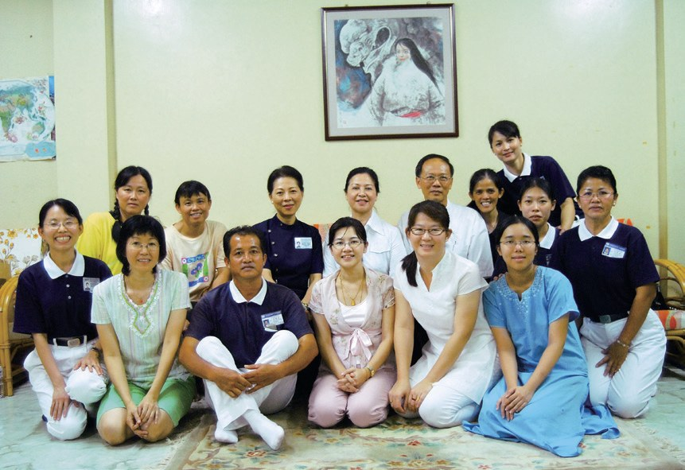
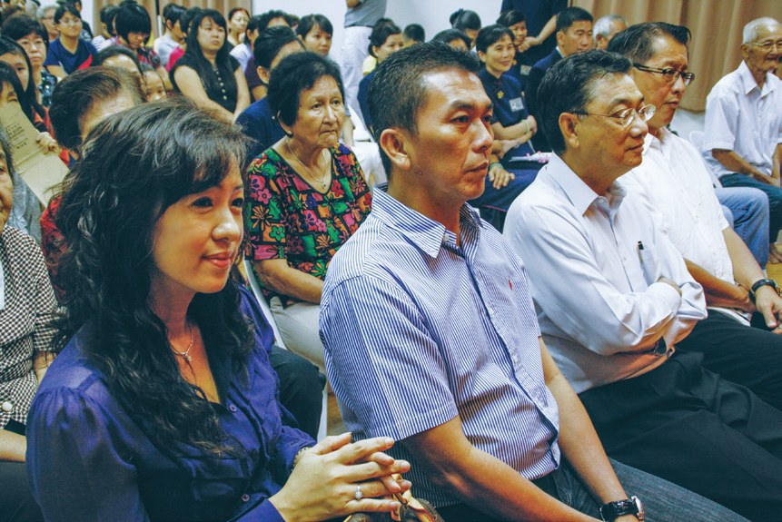
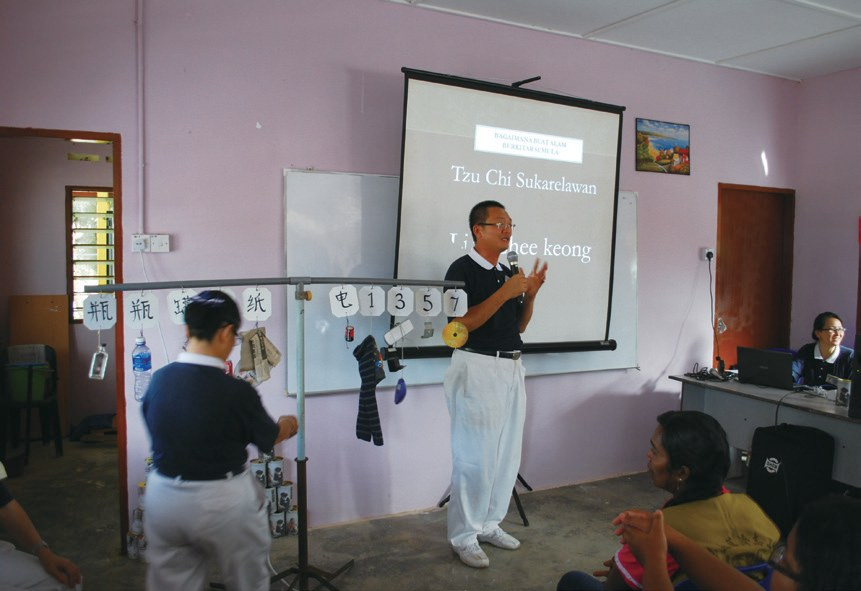
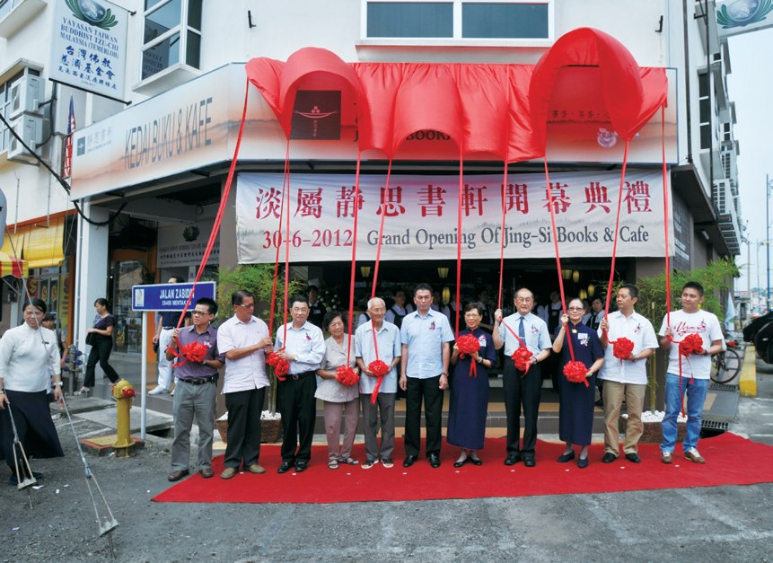
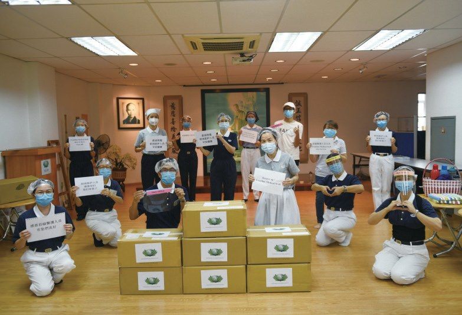
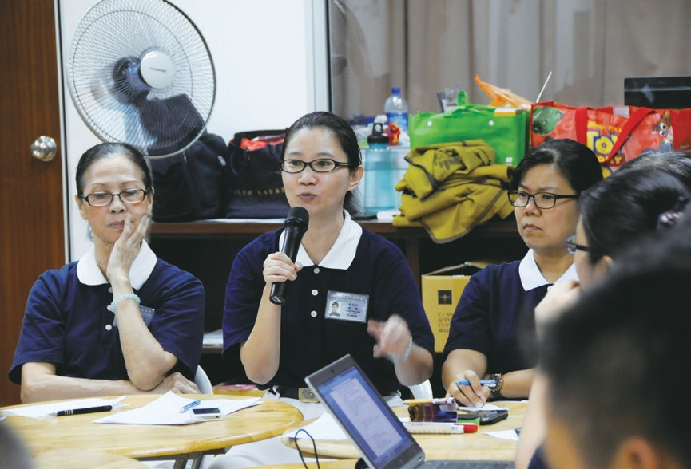
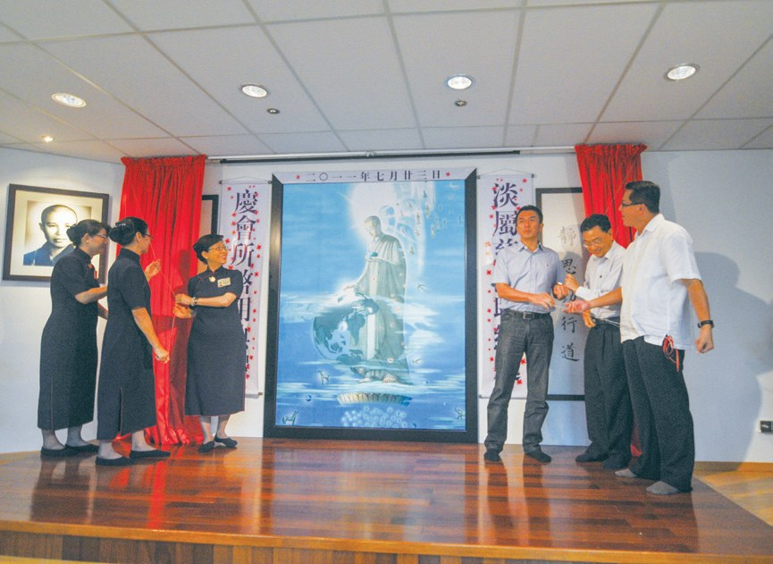

淡屬聯絡處
第一次茶會只來了十多人，要不要放棄？

先別急著下結論，讀完再說說你的想法～
這一篇講淡屬聯絡處：一位搬去和女兒同住的會員，想把慈濟帶進彭亨州的文德甲。
你會讀到毫無經驗卻來了六百多人的講座、志工親自送上門的助學金、彭亨州第一家靜思書軒，還有一位拖著病痛、用照片寫歷史的負責人。
下面是原書的節錄，紅色底線是我們替你標出的轉折點。
讀之前：第一次辦活動，來的人很少，你會怎麼做？
從零開始
2004年，鄭金花搬到文德甲。閱讀引導
鄭金花（慈常）受關丹志工龔秀娟（慈慇）接引而成為慈濟會員。2004年，鄭金花搬至淡屬文德甲與女兒同住，因為有感於慈濟的好，希望能將慈濟的美善帶入文德甲社區。

就想把慈濟帶過去！
2006年2月，鄭金花邀約慈濟關丹聯絡處志工前來，舉辦慈濟茶會愛灑活動，與當地居民分享慈濟理念，無奈因緣尚未具足，僅有十多位居民參與，不過她因此結識了慈濟法親陳思筠（慈庭）與鍾厚芳。

這是淡屬志工第一次舉辦活動，雖然毫無經驗，但充滿熱誠。籌備過程中志工從場地布置、到幕後補位，都一再確認，就是為了圓滿首場幸福人生講座。
猜一猜閱讀引導
2006年11月，淡屬志工第一次辦活動——幸福人生講座。毫無經驗的他們，吸引了多少人？
當地實業家兼慈善家鄭乾興先生，因為認同慈濟理念，無償借出位於文德甲的店屋作為新會所。

- 145人志工p.813
- 10,272人會員p.813
見苦知福
志工帶著自己的孩子去幫忙。閱讀引導
淡屬志工為照顧戶籌備「慈善日」，依照顧戶的家庭情況，幫忙清潔環境，或是協助醫療就診等。如居家清掃慈善日，常常看到志工帶著家中孩子一同來「見苦知福」，……
看見別人的苦！
11月，淡屬慈濟首次舉辦新芽助學金頒發典禮，嘉惠252位中小學的學生。活動翌日，志工也逐戶拜訪13位無法出席的學生，並送上助學金。

志工親自送上門！
一次冷清，再試一次
第一個環保點，反應並不熱烈。閱讀引導
2006年12月，淡屬志工在淡馬魯寶光戲院成立首個環保點，初次進行環保活動，由於經驗不足，參與的人數不多，並未引起太大的迴響與關注。但是淡屬志工並沒有因為遭受挫折而放棄，轉而參考鄰近慈濟據點推廣環保的經驗。

就去學別人的方法！
2014年，馬來西亞東海岸發生嚴重水災，志工走入瓜拉吉撓關懷及發放。水災援助後，參與慈濟瓜拉吉撓環保點回收活動的居民增加了，志工藉此因緣進入社區、學校舉辦環保茶會，宣導環保的重要性；只要不亂丟垃圾，就能降低水患時阻塞排水設施所造成的影響。

瓜拉吉撓達如那因宗教學校更將環保活動融入學生的必修科目，由老師帶著學生在每個星期六學習做環保，讓孩子培養愛惜資源的觀念。
「在這之前我不明白環保，來到這裡學習到很多，讓我更清楚環保。……未來我會嘗試落實環保分類，不只是我一個人，還會請同學一起來做。」
老師麥慕娜說・p.816
老師也一起學！
大家都來響應
一間書軒，和一場疫情中的水災。閱讀引導
2011年10月，文德甲實業家鄭乾興一家，在拿督王亞禮夫婦陪同下，受邀出席雪蘭莪麗陽廣場靜思書軒啟用典禮後，深受感動。進而發心將位於文德甲的公司店面無償借給淡屬慈濟，作為彭亨州第一家靜思書軒。


因為疫情，許多人被困於家中，商家也沒有營業，但在得知是為災民準備餐盒，大家都紛紛響應捐贈，此次水災共提供2,415盒素食便當。

還是來幫忙！
「這些年來，每次發生災難，慈濟都會出來支援，我都看在眼裡，只要在我能力範圍內，我都會支持。」
參與捐贈的餐廳老闆姚裕昌說・p.818不畏病苦
三十歲那年，她罹患類風濕性關節炎。閱讀引導
周奕伶不願向病痛低頭，除了看中醫，也接受各種療法，但身體情形並未好轉，後來不只是無法走路。
還能做志工嗎？
2006年，周奕伶參加淡屬慈濟在文德甲舉辦幸福人生講座，馬六甲分會負責人劉濟雨分享慈濟的慈善活動，讓她很感動，起了加入慈濟志工的念頭。但考慮自己的身體無法配合，她先選擇擔任人文真善美，盡自己的能力，透過整理活動照片，敘寫文字留下慈濟的歷史。

2009年「全球四合一研習營」，她隨馬來西亞慈濟人回到臺灣參加，聽到志工分享，上人膝蓋痛也會用繃帶綁膝蓋，緩和痛楚。周奕伶不捨上人用生命做慈濟的悲心，發願在慈濟路上永不退轉。
卻心疼上人的痛。
「……慈濟人自己家同樣也淹水，但還是先放下自己的家，投入了關懷受災難人的家。……」
上人說・p.822停一停：誰讓你記住了？閱讀引導
選一位你印象最深的人。沒有標準答案。
有人搬家後把慈濟帶進社區，有實業家借出店屋和書軒，有餐廳老闆在疫情中捐便當，有人拖著病痛寫下歷史。哪一位讓你最有感覺？

一起回頭看看吧～
回望
依本章原文整理，每一條都標了原書頁碼。閱讀引導
背後原因
淡屬怎樣扎根

小川第一次茶會只來了十多人，後來怎麼會有自己的會所？
- 冷清的茶會
第一次茶會只有十多位居民參與。p.811
- 三人一起努力
鄭金花等三人決定一同深耕淡屬。p.812

會所啟用2011年淡屬聯絡處新會所啟用。p.813
後續發展
淡屬一路走來

小禾從第一次茶會到靜思書軒開幕，經過了多少年？
- 2006.2
第一次慈濟茶會。p.811
- 2006.11
首場幸福人生講座。p.812
- 2006.12
首個環保點成立。p.815
- 2008.11
首次新芽助學金頒發典禮。p.814
- 2011.7.23
淡屬聯絡處新會所啟用。p.813
- 2012.6.30
淡屬靜思書軒開幕。p.817
周奕伶的轉變
以前和後來
小川投入慈濟以後，周奕伶有什麼不同？
- 他人異樣的眼光令她難受敞開心胸，與人群接觸p.820
- 身體不便，先做人文真善美承擔淡屬聯絡處負責人p.820–821
- 嚴重時無法走路、進食能做簡單的生活起居p.820–821
以上只整理本章寫到的事；書裡沒寫到的，我們不替它下結論。
回頭看讀前的選擇閱讀引導
首個環保點反應不熱烈，淡屬志工沒有放棄，轉而參考鄰近據點的經驗（p.815）；第一次茶會只有十多人，後來會員卻超過一萬人（p.811、813）。一次冷清，不等於一直冷清。
回家會不會也教爸爸媽媽？
只有你自己看得到喔！
準備好了就一起出發～